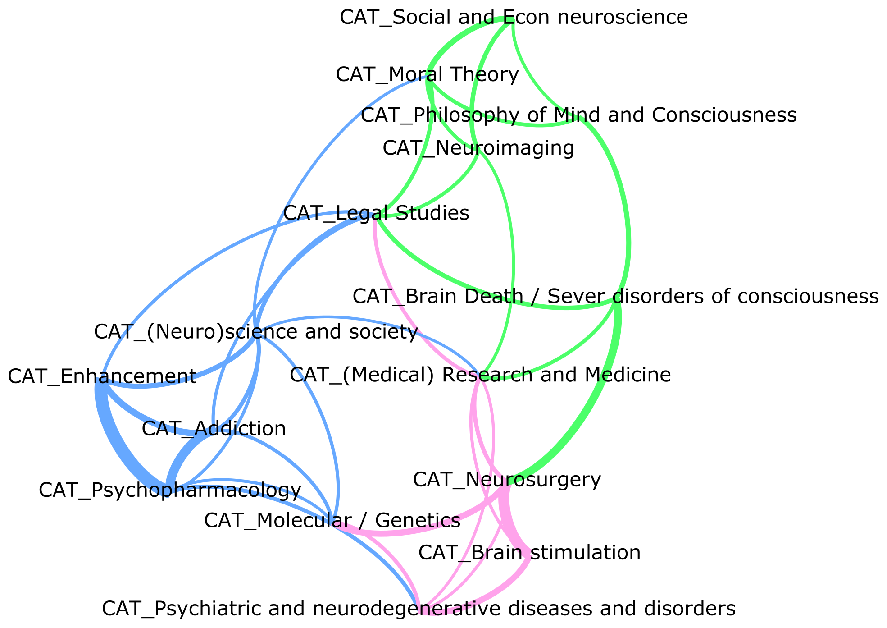
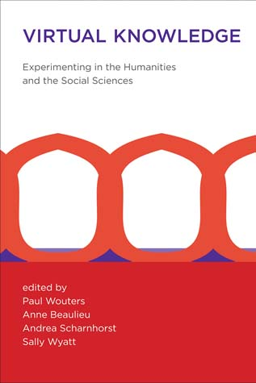
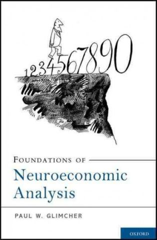

Academic publications
history of science. neuroeconomics. network analysis. social media. natural language processing. data visualization. big data. scientometrics.
|  | Neuroethics 1995–2012. A Bibliometric Analysis of the Guiding Themes of an Emerging Research Field with Jon Leefmann and Elisabeth Hildt, published in Frontiers in Human Neuroscience, 2016. download the author's proof |
 |
Handbook "Twitter for Research", 2015/2016 The proceedings of the first conference on Twitter for Research held in Lyon, in April 2015. find the book on amazon |
| Where is data visualization going ? a personal perspective A keynote talk given at the 2nd edition of DataStorm Big Data Summer School, 13-15 July 2015, Instituto Superior Técnico (IST/UL) — University of Lisbon. see the illustrated full text |
|
| Dataviz and DH : hype or hope ? and four other personal stories A talk given at the "Data visualization for the Arts and Humanities"" event, 5-6 March, Queen's University Belfast. see the illustrated full text |
|
| The Scale and Geography of Collusion in the European Market: A Longitudinal View with Hubert Buch-Hansen, published in the Journal of Common Market Studies (2015). download the draft
Europe has a long history of cartels, but the changes in the scale and geography of collusion in the European market from the post-war decades until the present have not been systematically investigated.
Using network analysis methods and an original dataset based on decisions in EU cartel cases, this paper maps the developments in detected collusion in the European market from 1958 to 2008 and tentatively explains these developments. It appears that collusive activities increased during the 1960s and after the mid-1980s and that a long decline in the scale of collusion began in the mid-1990s. Moreover, the geographical spread of collusive activities in Europe increased considerably from 1969 to 1993. To facilitate an explanation of these and other findings, the paper presents a three-dimensional analytical framework that emphasises the importance of anti-cartel regulation, major changes in the business environment and the size of national economies. |
|
| Dynamic Visualization of Large Transaction Networks: the Daily Dutch Overnight Money Market with Ronald Heijmans, Richard Heuver, Iman van Lelyveld, in De Nederlandsche Bank Working Paper Series, 2014, Amsterdam. visit the website download the paper
This paper shows how large data sets can be visualized in a dynamic way to support exploratory research, highlight econometric results or provide early warning information. The case studies included in this paper case are based on the payments and unsecured money market transaction data of the Dutch part of the Eurosystem’s large value payment system, TARGET2.
We show how animation facilitates analysis at three different levels. First, animation shows how the market macrostructure develops. Second, it enables individual banks that are of interest to be followed. Finally, it facilitates a comparison of the same market at different moments in time and of different markets (such as countries) at the same moment in time. |
|
| Umigon: sentiment analysis for tweets based on terms lists and heuristics In Proceedings of the International Workshop on Semantic Evaluation, SemEval ’13, June 2013, Atlanta, Georgia. download the paper try it!
I develop Umigon since December 2012 as a web application providing a service of sentiment detection in tweets. This paper describes the classification engine behind the application. Umigon has been designed to be fast and scalable. It also provides indications for additional semantic features present in the tweets, such as time indications or markers of subjectivity. Umigon is in continuous development and can be tried freely at umigon.com.
Umigon is now also available as a desktop application for Mac, PC and Linux. Contact me at clevallois[at]rsm.nl for information about licenses. |
|
|  | Sloppy Data Floods or Precise Social Science Methodologies? with Stephanie Steinmetz and Paul Wouters, in Virtual Knowledge (Paul Wouters, Anne Beaulieu, Andrea Scharnhorst, & Sally Wyatt, eds). 2013, MIT Press visit the book site @ MIT Press - visit the enhanced book website download the chapter
What are the implications of data-intensive research for social sciences? In an influential editorial, Chris Anderson from the magazine Wired predicted a future where scientific advances would result less from theoretical work, and more from brute force mining on petabytes of data. While evolutionary biology and astronomy are cited as two examples of fields which already entered this new age, it is very uncertain whether the social sciences should feel concerned at all by this prediction.
|
| Translating upwards: linking the neural and social sciences via neuroeconomics with John Clithero, Ale Smidts, Paul Wouters, Scott Huettel, in Nature Reviews Neuroscience. 2012, 13(11), pp.789-797. visit the website download the paper
The social and neural sciences share a common interest in understanding the mechanisms that underlie human behaviour. However, interactions between
neuroscience and social science disciplines remain strikingly narrow and tenuous.
We illustrate the scope and challenges for such interactions using the paradigmatic example of neuroeconomics. Using quantitative analyses of both its scientific literature and the social networks in its intellectual community, we show that neuroeconomics now reflects a true disciplinary integration, such that research topics and scientific communities with interdisciplinary span exert greater influence on the field. |
|
|  | Book review: Foundations of Economic Analysis by Paul Glimcher in Journal of Economic Methodology. 2011, 49(1), pp.81-84. visit the website download the paper
Paul Glimcher is a profound theorist and experimenter in the physiological basis of decision making. In this review, I recount how his book presents a general framework to understand decision-making at the physiological level.
|
| Why were biological analogies in economics "a bad thing"? Edith Penrose's battles against social Darwinism and McCarthyism in Science in Context. 2011, 24(4), pp.465-485. visit the website download the paper
In 1952, Edith Penrose wrote the most articulated criticism of biological analogies in economics. This was a time when the intellectual atmosphere in the United States was in full swing: the beginning of the Cold War had profound impact on what could or could not be legitimately be said on campuses. Based on historical archives on Penrose and McCarthyism retrieved from the FBI, I explore the intricate relations between Penrose's scientific, personal and political values.
|
|
| Can de-growth be considered a policy option? A historical note on Nicholas Georgescu-Roegen and the Club of Rome in Ecological Economics. 2010, 69(11), pp.2271-2278. visit the website download the paper
Nicholas Georgescu-Roegen was a mathematician and economist today rediscovered as a major inspiration by the advocates of the "de-growth" of the economy. Based on new material retrieved from the personal archives of Georgescu-Roegen, this article restitutes Georgescu-Roegen's relations with the Club of Rome in the 1970s.
|
|
| One analogy can hide another: Physics and biology in Alchian's 'Economic Natural Selection' in History of Political Economy. 2009, 41(1), pp.163-181. visit the website download the paper
This paper tells the story of the early intellectual life of Alchian and his later activities at the RAND Corporation to provide some context to his treatment of uncertainty, central to his 1950 article on Darwinian competition in the economy. Our study shows that it was his involvement in military systems analysis at the onset of the Cold War that led Alchian to reckon that uncertainty was a fundamental obstacle to marginal analysis.
|
|
| Économie et biologie aux États-Unis (1950-1982): l'ambivalence d'un lien in PhD thesis (in French), University of Lyon, 2008. visit the pdf on an open repository download the pdf of the thesis
My PhD thesis (in French) is an archive-based investigation of the relationships between economics and biology in post-war USA. From the Cold War to the debates on de-growth in the 1970's, these two disciplines traded concepts and world views. I tell this story by drawing from the biographies of key players in this dialogue (Armen Alchian, Edith Penrose, Paul Samuelson, Nicholas Georgescu-Roegen, Kenneth Boulding, Edward Wilson, Sidney Winter, Richard Nelson, and Jack Hirshleifer).
|